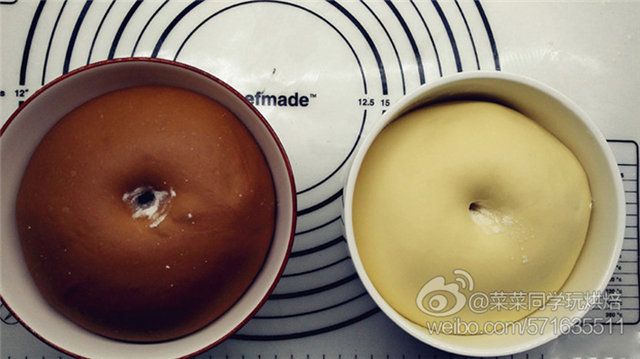

联系客服QQ：123-456-789
菜谱大全
萌萌哒小熊面包
发布人：爱蓝胖子 发布时间：2017.03.13
“最近爱上做各种各样的超级可爱的面包，准备将它们组成一个萌宠系列。这次做的是萌翻天的小熊面包，用的是学厨的12连杯马芬模具。用蛋糕模做面包，造型更加独特。面包很松软，放了3天还是软软的。淡淡的面包香味，纯粹的味道。”
食材明细
- 牛奶（可可面团） 65g
- 鸡蛋液（可可面团） 30g
- 高筋面粉（可可面团） 130g
- 低筋面粉（可可面团） 15g
- 可可粉（可可面团） 5g
- 糖（可可面团） 20g
- 盐（可可面团） 1g
- 酵母（可可面团） 2g
- 黄油（可可面团） 18g
- 牛奶（原味面团） 45g
- 鸡蛋液（原味面团） 20g
- 高筋面粉（原味面团） 90g
- 低筋面粉（原味面团） 15g
- 糖（原味面团） 15g
- 盐（原味面团） 1g
- 酵母（原味面团） 2g
- 黄油（原味面团） 12g
萌萌哒小熊面包的做法步骤
-
1先做可可面团。除黄油外,把可可面团的其它原材料按照底层液体，中层粉类，上层糖、盐和酵母的顺序放入面包中，启动一个揉面程序。
-
2揉至能拉出比较厚的膜后加入软化好的黄油。再次启动和面程序，15分钟。
-
3揉至扩展阶段，这时候面团非常光滑。
-
 4可以撑出较薄的膜，不需要手套膜。
4可以撑出较薄的膜，不需要手套膜。 -
 5按同样的做法做一个原味面团。
5按同样的做法做一个原味面团。 -
6面团团圆之后放入大碗中，开启烤箱发酵功能,时间为60分钟。
-
7发酵到面团膨胀两倍大，手指沾面粉戳一个洞，不回缩不塌陷即表示发酵完成。
-
8发酵好的面团用擀面杖排气，可可面团先分出一个35g的面团（小熊的头和手），剩下的均分为7个小面团。原味面团先分出一个25g的面团（小熊的头和手），剩下的均分为5个小面团。将它们都滚圆之后盖上保鲜膜松弛15分钟。
-
9松弛好的面团压扁之后再次滚圆，一一摆入模具中，送入烤箱， 36℃发酵，大约需要30分钟，发酵到2倍大。
-
10发酵期间我们来处理小熊的耳朵和手。耳朵每个2g、手每个1.5g。可可面团分出14个耳朵和手，原味面团分出10个耳朵和手，将它们滚圆备用。
-
11取出发酵好的面团，之后将做耳朵和手的小剂子摆在相应的位置。
-
12整形好的面团送入预热好的烤箱，上下火170℃，中层，烤25分钟。
-
13出炉后脱模，放在烤网上晾凉，用黑色色素笔画出表情即可。
-
14另一种做法是先揉一个原味面团，再均分两半（做成6只白色小熊，6只可可小熊），一半加入可可粉，之后分开发酵，剩下的步骤一致。面团原料分量：高筋面粉220g、低筋面粉30g、糖35g、牛奶110g、鸡蛋一个、盐2g、酵母3g、黄油30g。加入的可可粉一样是5g。
小窍门
1.牛奶的量请根据面粉的吸水性进行调节。
2.烘烤的时间和温度仅供参考，请根据自己烤箱的脾气自我调整。
3.烘烤的时候剩下10分钟盖上锡纸。
4.可以用融化的巧克力画表情。
5.模具学厨大号12连杯不粘马芬模。
6.烤箱柏翠PE5359。
2.烘烤的时间和温度仅供参考，请根据自己烤箱的脾气自我调整。
3.烘烤的时候剩下10分钟盖上锡纸。
4.可以用融化的巧克力画表情。
5.模具学厨大号12连杯不粘马芬模。
6.烤箱柏翠PE5359。
使用的厨具：面包机、电烤箱
 微信关注
微信关注